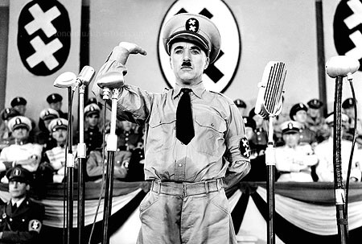

Originally published on Medium on 19th June, 2016
Many of us in the United Kingdom will be faced on the 23rd of June with an apparently simple choice: whether or not to remain within the European Union. However, this is not just a vote on whether Britain is more prosperous in the EU or out of it. A vote to leave the EU will change overnight both Britain’s image internationally and our understanding of our own history and place in the world.
The EU referendum follows hot on the heels of the Scottish independence referendum of 2015, perhaps defining a new trend of populist/nationalist plebiscite that may well spread to other Euro-sceptic areas such as Poland and Hungary. The official referendum question relates to membership of the European Union; a supranational organisation for free movement of people and trade under a common set of rules and regulations. However, a vote to leave the EU is something more than a vote to leave a free-trade bloc. The idea of the ‘European Union’ has become tied up with that of ‘Europe’ itself. A vote to leave would see Britain stepping back from the rest of Europe in a way it has not done in modern times. With the European project as the inheritor of the last three thousand years of Western civilisation, we’d be cutting ourselves out of that history, to find our own path in the world…and what would that path look like, for both the UK and for the rest of Europe?
Let’s imagine a scenario: An independent Britain seeks to redefine itself in the world via closer relations with the United States and with the Commonwealth nations, and by playing down Britain’s ‘european-ness’. Britain leaving the EU triggers copycat referendums in other disenchanted EU member states, starting a chain reaction that ends in the gradual waning of the union. Without the EU to bind it, the very idea of Europe itself loses significance as the forces of neoliberalism, globalisation and the pressures of man-made climate change reduce the developed world to a collection of nationalisms, regionalisms (c.f. Scotland, Catalunya) and city states (c.f. London) competing to secure natural resources to support their ageing populations. Oh, and people do lots of shopping. Sounds stark, you may say. Britain causes the end of the EU? Europe losing significance? And, what’s that about shopping?
To understand how the very concept of ‘Europe’ might lose meaning, we only have to look to our own history to understand. Great civilisations and empires of the past that must have seemed immortal at the time slipped away following periods of great change. Over time, people’s perceptions of the region they live in change. The Bronze Age collapse between c. 1200 and 1150 BC led to the destruction of almost every significant city in the eastern Mediterranean world many of them never to be occupied again. It is thought that climate change played a part [1][2][3]. The fall of the Rome in the West led to the later, 800-year long Dark Age that most of us know. By the time Europe roused itself during the Renaissance, the focus of power had shifted to the Romano-Germanic peoples. Now the Mediterranean Sea, considered throughout Classical times to be the centre of the world, was thought of as simply the southern border of a civilisation centred on proto-French, German and English states.
Massive civilisational and cultural changes do happen, usually when an underlying, long-term structural flaw in ‘the system’ (i.e. the combination of economics, politics and society) is exposed by some crisis. To take the example of the fall of Rome, the thin veneer of order provided by a systemically weakened military and a corrupted Imperial government was brushed aside by “a deluge of Barbarians”, as Gibbon put it [4].
In the modern era since the fall of the Soviet Union, ‘the system’ in Western Europe has stayed more or less the same. In fact, the Soviet Union had arguably, like the Roman Empire, existed far beyond what might have been expected given its underlying condition. Its fall didn’t really change anything in the West. Therefore, we can push the start of our modern era back to the economic disaster of the 1970s, when Keynes’ ideas failed us and Thatcherism and Reaganomics introduced us to a new friend: neoliberalism. Neoliberalism is the ideology underpinning financial deregulation, privatisation, free trade and austerity. It is the doctrine that has underpinned all British governments since Thatcher, and yet most people are completely unaware of what “neoliberalism” even means. George Monbiot likened it to the people of the USSR not knowing they lived under communism. In many ways, the European Union has been a perfect vehicle for the spread of neoliberalism, encouraging free trade and deregulation of markets, and limiting the remit of the state to intervene in the private sector.
Neoliberalist ideas have trickled down to the individual: a continent of citizens that saved itself from fascism is now a continent of consumers getting fat from fast-food. Distracted by shopping, we’ve forgotten that there is more to life than money. Even where we want to resist, it is so hard to avoid getting swept along with the desire for more stuff: a nicer house, a faster car, a newer phone. In the EU, and especially in the UK, as successive governments have taught the British people that ‘state is bad, private is good’, they have been slowly talking themselves out of a job. Neoliberalism has been chipping away for decades at the core of the European social democracy that the survivors of the horrors of WWII strived so hard to create. We’ve become convinced that the individual, and only the individual, has the power to shape lives. We’ve created a country where even the most disadvantaged young person feels like it’s their own fault if they don’t succeed in life. Mainstream politics no longer has the ability to inspire, to paint a picture of better future we should be working towards. In this environment, the importance of the nation state and the European Union have faded to the point where we question their existence.
The British people and many politicians have forgotten that we built the EU to bring together the peoples of Europe, to put behind us the political and military strife of the first half of the 20th century and to promote democracy, human rights, freedom of speech and quality of life. Perhaps like Rome before its decay, the European Union is now a thin veneer hiding outdated and corrupt institutions, awaiting the crisis that will cause its demise. After almost ten years of economic recession, millions of refugees desperately trying to enter the EU from Syria and elsewhere, a resurgence of far right politics, a possible Brexit, and with both Islamic and far-right terrorism striking at its heart, perhaps the EU’s crisis is already upon it.
We urgently need to repaint the picture of Britain at the heart of Europe. As the tragically murdered/assassinated Joanne Cox MP said in her maiden speech to the House of Commons, in these troubled times, we must all must put aside our differences and realise that “we are far more united and have far more in common with each other than things that divide us.” The EU is under pressure from all sides and is in need of urgent reform. However, the solution is not to pull up the drawbridge and shut ourselves off. Britain has a responsibility to stay in Europe and be a positive and progressive voice, just as it has done throughout the continent’s history. Arguments of a return to a truly ‘Great’ Britain going it on its own ignore the central role that Britain has always played in Europe.
There is evidence of the shared history of the British Isles and the continent way back into Neolithic times and throughout the Celtic/Pre-Roman period. Things really took off when ideas from the Greek and Roman worlds arrived with the invading Romans. Thanks to the expansionism of the Romans, all the nations of Europe for fifteen-hundred years shared the same basic instruction in politics, art, science, theatre, literature, and philosophy.
Whilst evidence of British learning in the first few centuries AD is scarce, the spread of Christianity to the British Isles provided a vehicle for the study of Christian theology and classical learning, at the time only recently combined by the likes of Boethius [5]. Thanks to the work of Irish and Anglo-Irish scholars, this classical learning was preserved on through the collapse of learning in mainland Europe during the 7th and 8th centuries. These scholars, principally Northumbrian monks, played a crucial role in preserving a knowledge of classical philosophy on into the medieval period [6]. When Europe experienced a partial recovery during the time of the French Emperor-King Charlemagne, it was Anglo-Irish and Anglo-Saxon scholars that he chose to lead his schools and monasteries [6].
The European tradition of melding philosophy with Christianity gifted early Enlightenment figures of the 17th Century, including British philosophers such as Francis Bacon, the use of rigorous conceptual analysis and the careful drawing of distinctions to reach logical conclusions. Newton and Hooke then applied this new logic to the real world. This was the dawn of what we now call science. Whilst many of the key figures in this new movement were British, these scientists drew heavily from the European learning of Erasmus, Galileo, Brahe, and many more. This flowering of knowledge in universities and institutions up and down the country would never have happened had Britain existed in isolation, instead of as part of a greater European movement of intellectual curiosity.
The Europeans of the pre-modern period combined latent ideas of democracy from their knowledge of classical Greece with Feudal ideas of government by consent to create the basis for modern, parliamentary democracy. In the Glorious Revolution of 1688, James II was replaced by an imported King from the Netherlands supported by the English House of Commons. Following the enacting of the Bill of Rights in 1689, William of Orange was to lead the English people with their consent, and never again has an English monarch had absolute power. It was this British revolution, not the French Revolution, which truly set Europe on the path towards democracy. Moreover, William’s principal incentive to take on the English Crown was to ensure intervention of British forces in the fight against the absolutism of Louis XIV, setting a pattern of British intervention in Europe that continues on into modern times, its latest incarnation being in Kosovo/Bosnia in the late 1990s. Britain should be proud of the positive influence it has had over Europe, not least the two times it intervened in the 20th century to fight against German expansionism, or in the 19th century against Napoleonic imperialism.
The idea of ‘free speech’, i.e. the right to speak one’s mind without being persecuted, has origins in Ancient Greek thought. However, from the late medieval to early modern period, it was the UK that led the vanguard. The signing of the Magna Carta in 1215 enshrined the first basic rights of man anywhere in Europe. 17th-18th century Britain was seen as a haven for free speech, exemplified in Milton’s pamphlet on freedom of the press in 1644, the aforementioned Bill of Rights and the well-recorded praise of the 18th century French literary genius Voltaire. The BBC, although recently threatened with reforms to its funding and content, is seen throughout the world as a beacon of balanced and fact-based journalism.
Whilst there is a lot that Britain could learn from its European partners, I am not arguing that every part of Europe’s history has been positive. You don’t have to delve very deep to jar against the horrors of fascism and colonialism. However, it is clear that, on balance, the influence of European culture and thought on Britain has been a positive one. If Britain vote to leave the EU, I believe this is a vote not just to leave a quasi-governmental organisation, but a vote to cut ourselves off from three millennia of European genius, collaboration, invention and progressive thought. Brexit could also have consequences for the rest of Europe far beyond our understanding.
Britain’s history of leading the way on issues such as free speech also places the country in a unique position to shape the direction of the EU and Europe in the next twenty years. With huge global challenges such as the rising power of autocratic states (c.f. China, Russia), increasing intolerance and terrorism (c.f. Donald Trump, the murder of Jo Cox MP, Islamic State) and man-made climate change, it is dangerous to be complacent about the EU’s unique ability to bring together the nations of Europe and make tough decisions. It is Britain’s responsibility not to step back from Europe, to retreat into itself, but rather to be a strong voice for progressive ideas. This week with the murder of an MP who fought tirelessly to find the common ground that we all share, we’ve seen how small-minded ideas lead only to hate and hopelessness. We must take our hands from off the latch, throw open the door and march out proudly as the nation who, in their darkest hour, found the humanity that lies in all of us.